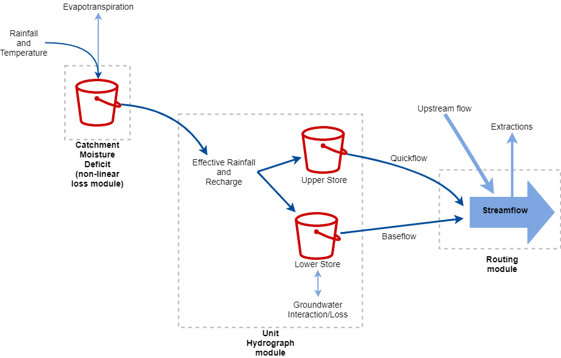

This section of the primer provides a simple to understand "plain English" summary of the IHACRES model.
IHACRES provides estimations of streamflow at catchment scale by applying the conceptual model
of a "leaky bucket".
The model can be conceptualized as taking the following structure:

Conceptual figure of the IHACRES model
In brief, daily rainfall and temperature data are feed into the
In brief, daily rainfall and temperature data are fed into the Catchment Moisture Deficit (CMD)
module, which produces estimates of catchment moisture deficit, effective rainfall and
recharge. The unit hydrograph module uses effective rainfall and recharge values to provide estimates
of streamflow. Streamflow can be thought of as being made up of quickflow and slowflow (i.e., overland
and groundwater flow, respectively).
Temperature is correlated with evapotranspiration, which is evaporation combined with how
much water plants use ("transpirate"). IHACRES uses temperature data to determine evapotranspiration
levels, although evapotranspiration data can be used directly. Evapotranspiration takes water away
from the catchment (makes it drier) as water is taken up by plants and evaporated into the air.
Typically, the hotter it is, the higher evapotranspiration is.
This drying effect is counteracted by rainfall, which replenishes the water in the catchment.
In this context, the proportion of rainfall that contributes to streamflow is referred to as
"effective rainfall". Some rainfall may "recharge" groundwater, and so contributes to streamflow
via baseflow.
The above processes control, in part, how wet the catchment is. This is represented by the CMD
index, which is an index with a 0 value meaning "completely wet" (fully saturated) and values above
0 indicating how "dry" a catchment is. How wet the catchment is determines the level of effective
rainfall and recharge, which then influences how much runoff occurs after a rainfall event and the
volume of streamflow in the days afterwards.
When used to represent a sub-catchment, the flow that continues downstream is the upstream flow
minus any extractions/loss that may occur.
A more detailed overview
This section of the primer gives a brief technical description of IHACRES_nim.
Further detail may be found in the API documentation.
IHACRES_nim provides functions which may be composed to represent different formulations
of the IHACRES model.
All formulations available in IHACRES_nim require the following three parameters (with usual bounds):
Parameter
Bounds
Description
$d$
$10 \le d \le 550$
flow threshold
$e$
$0.1 \le e \le 1.5$
Temperature to PET conversion factor
$f$
$0.01 \le f \le 3$
Plant stress threshold, applied to $d$
A six parameter implementation can be achieved with additional parameters:
Parameter
Bounds
Description
$\tau_q$
$0.5 \le \tau_q \le 10$
Time constant value controlling how fast quickflow recedes
$\tau_s$
$10 \le \tau_s \le 350$
Time constant value that governs the speed of slowflow recession
$v_s$
$0 < v_s \le 1$
Partitioning factor separating slow and quick flow contributions
The bilinear implementation (detailed later below) adds an additional flow threshold parameter ($d_2$)
and replaces the above $\tau$ and $v_s$ parameters.
Parameter
Bounds
Description
$d_2$
$0 < d_2 \le 10$
multiplicative factor applied to $d$
$a$
see note below
Time constant value controlling how fast quickflow recedes
$b$
see note below
Time constant value that governs the speed of slowflow recession
$\alpha$
$0 < \alpha \le 1$
Partitioning factor separating slow and quick flow contributions
Note: Appropriate values of $a$ and $b$ can be context specific. Nevertheless, to give some guidance,
these values can be set between 0.1 and 10.0 for $a$ and between 0.001 and 0.1 for $b$.
An eighth parameter is also added to account for groundwater storage:
Parameter
Bounds
Description
$s$
$1\text{e-}10 < s \le 10$
groundwater storage factor
Delving into the implementation, the flow between parameters (light blue) and functions (rounded boxes)
for an application of IHACRES_GW can be seen in the diagram below can be seen in the diagram below.
Here,
rounded boxes represent functions
blue boxes represent input factors
green functions indicate those relevant to the non-linear loss module
the beige function is the relevant unit hydrograph function
Use of any component function may be replaced with an equivalent. For example, calc_ft_interim_cmd may be replaced by any other calc_*_interim_cmd function,
so long as the correct parameters are passed in. See documentation for details.
An implementation example for the Python language, can be found here.
The CMD module
The CMD module starts by producing an interim CMD value (a value that does not yet take into account $ET$),
as well as effective rainfall ($U$) and recharge ($r$) estimates.
There are different formulations available to do this. Those included in IHACRES_nim are the:
linear
trignometric
bilinear
The linear and trignometric formulations require the CMD value for the previous time step ($M_{k-1}$),
the $d$ parameter, and the rainfall for the current time step ($P_k$).
The linear formulation is shown below.
The updated CMD value for the current time step ($M_k$) is then calculated from the CMD value for
the previous time step ($M_{k-1}$), $P_k$, $U_k$ and $r_k$:
$$
M_k = M_{k-1} + ET_k + U_k + r_k - P_k
$$
The Unit Hydrograph
The linear approach implemented in IHACRES_nim assumes two stores in parallel.
$v_q = 1 - v_s$
$A_{u,k} = U_k \cdot A$, where $A$ is the catchment area in km2
An additional routing module may be used to account for extractions, groundwater interactions, and other
factors.
Table of input variables
Parameter
Description
$P$
Rainfall
$T$
Temperature
$ET$
Evapotranspiration
$U$
Effective rainfall
$r$
Recharge
$M$
Catchment moisture deficit
$A$
Catchment area in km^2
$Q_q$
Quickflow
$Q_s$
Slowflow
$Q_T$
Streamflow
import nimib
nbInit
nbDoc.useLatex
# when not defined(numericalDefaultStyle):# nbDoc.context["stylesheet"] = """<link rel="stylesheet" href="https://latex.now.sh/style.css">"""# Original conceptual figure# [](https://mermaid-js.github.io/mermaid-live-editor/#/edit/eyJjb2RlIjoiZ3JhcGggTFJcblxuICByYWluZmFsbFtcIlJhaW5mYWxsIChQW3RdKVwiXVxuICByYWluZmFsbCAtLT4gbmxfbG9zc1tcIkNhdGNobWVudCBNb2lzdHVyZSBEZWZpY2l0IG1vZHVsZVwiXVxuICBUW1wiVGVtcGVyYXR1cmUgKFQpXCJdIC0tPiBubF9sb3NzXG4gIG5sX2xvc3MgLS0-IHVoW1VuaXQgSHlkcm9ncmFwaF1cblxuICB1aCAtLT58UXVpY2tmbG93fCBTdHJlYW1mbG93XG4gIHVoIC0tPnxTbG93Zmxvd3wgU3RyZWFtZmxvd1xuXG4gIGNsYXNzRGVmIHZhcmlhYmxlIGZpbGw6bGlnaHRibHVlXG4gIGNsYXNzIHJhaW5mYWxsLFQgdmFyaWFibGVcblxuICBjbGFzc0RlZiBub25saW5lYXIgZmlsbDpsaWdodGdyZWVuXG4gIGNsYXNzIG5sX2xvc3Mgbm9ubGluZWFyXG5cbiAgY2xhc3NEZWYgbVVIIGZpbGw6YmVpZ2VcbiAgY2xhc3MgdWggbVVIIiwibWVybWFpZCI6e30sInVwZGF0ZUVkaXRvciI6ZmFsc2V9)
nbText: """
<script src="https://cdn.jsdelivr.net/npm/mermaid/dist/mermaid.min.js"></script>
## Primer
This section of the primer provides a simple to understand "plain English" summary of the IHACRES model.
IHACRES provides estimations of streamflow at catchment scale by applying the conceptual model
of a "leaky bucket".
The model can be conceptualized as taking the following structure:
"""
nbImage(url="assets/ihacres_conceptual_figure.png", caption="Conceptual figure of the IHACRES model")
nbText: """
In brief, daily rainfall and temperature data are feed into the
"""
nbText: """
In brief, daily rainfall and temperature data are fed into the Catchment Moisture Deficit (CMD)
module, which produces estimates of catchment moisture deficit, effective rainfall and
recharge. The unit hydrograph module uses effective rainfall and recharge values to provide estimates
of streamflow. Streamflow can be thought of as being made up of quickflow and slowflow (i.e., overland
and groundwater flow, respectively).
Temperature is correlated with evapotranspiration, which is evaporation combined with how
much water plants use ("transpirate"). IHACRES uses temperature data to determine evapotranspiration
levels, although evapotranspiration data can be used directly. Evapotranspiration takes water away
from the catchment (makes it drier) as water is taken up by plants and evaporated into the air.
Typically, the hotter it is, the higher evapotranspiration is.
This drying effect is counteracted by rainfall, which replenishes the water in the catchment.
In this context, the proportion of rainfall that contributes to streamflow is referred to as
"effective rainfall". Some rainfall may "recharge" groundwater, and so contributes to streamflow
via baseflow.
The above processes control, in part, how wet the catchment is. This is represented by the CMD
index, which is an index with a 0 value meaning "completely wet" (fully saturated) and values above
0 indicating how "dry" a catchment is. How wet the catchment is determines the level of effective
rainfall and recharge, which then influences how much runoff occurs after a rainfall event and the
volume of streamflow in the days afterwards.
When used to represent a sub-catchment, the flow that continues downstream is the upstream flow
minus any extractions/loss that may occur.
## A more detailed overview
This section of the primer gives a brief technical description of `IHACRES_nim`.
Further detail may be found in the [API documentation](https://connectedsystems.github.io/ihacres_nim/ihacres.html).
`IHACRES_nim` provides functions which may be composed to represent different formulations
of the IHACRES model.
All formulations available in `IHACRES_nim` require the following three parameters (with usual bounds):
| Parameter | Bounds | Description |
|----------- |-------------------- |---------------------------------------- |
| $d$ | $10 \le d \le 550$ | flow threshold |
| $e$ | $0.1 \le e \le 1.5$ | Temperature to PET conversion factor |
| $f$ | $0.01 \le f \le 3$ | Plant stress threshold, applied to $d$ |
A six parameter implementation can be achieved with additional parameters:
| Parameter | Bounds | Description |
|-----------|------------------------ | ----------------------------------------------------------------|
| $\tau_q$ | $0.5 \le \tau_q \le 10$ | Time constant value controlling how fast quickflow recedes |
| $\tau_s$ | $10 \le \tau_s \le 350$ | Time constant value that governs the speed of slowflow recession|
| $v_s$ | $0 < v_s \le 1$ | Partitioning factor separating slow and quick flow contributions|
The bilinear implementation (detailed later below) adds an additional flow threshold parameter ($d_2$)
and replaces the above $\tau$ and $v_s$ parameters.
| Parameter | Bounds | Description |
|-----------|------------------|-----------------------------------------------------------------|
| $d_2$ | $0 < d_2 \le 10$ | multiplicative factor applied to $d$ |
| $a$ | see note below | Time constant value controlling how fast quickflow recedes |
| $b$ | see note below | Time constant value that governs the speed of slowflow recession|
| $\alpha$ | $0 < \alpha \le 1$| Partitioning factor separating slow and quick flow contributions|
**Note:** Appropriate values of $a$ and $b$ can be context specific. Nevertheless, to give some guidance,
these values can be set between 0.1 and 10.0 for $a$ and between 0.001 and 0.1 for $b$.
An eighth parameter is also added to account for groundwater storage:
| Parameter | Bounds | Description |
|-----------|---------------------|--------------------------- |
| $s$ | $1\text{e-}10 < s \le 10$ | groundwater storage factor |
Delving into the implementation, the flow between parameters (light blue) and functions (rounded boxes)
for an application of IHACRES_GW can be seen in the diagram below can be seen in the diagram below.
<!--[![](https://mermaid.ink/img/eyJjb2RlIjoiZ3JhcGggTFJcbiAgbWtbXCJDTUQgKE1ba10pXCJdIC0tPiBjYWxjX2NtZChjYWxjX2NtZClcbiAgbWsgLS0-IGludGVyaW0oXCJjYWxjX2Z0X2ludGVyaW1fY21kXCIpXG5cbiAgcmFpbltcIlJhaW5mYWxsIChQW3RdKVwiXSAtLT4gaW50ZXJpbVxuICBcbiAgcmFpbiAtLT4gY2FsY19jbWRcbiAgRVtcIkV2YXBvcmF0aW9uIChFKVwiXSAtLT4gRVQoXCJjYWxjX0VUXCIpIC0tPiBjYWxjX2NtZFxuICBpbnRlcmltIC0tPnxcIkludGVyaW0gQ01EIChNW2ZdKVwifCBFVFxuXG4gIGludGVyaW0gLS0-fFwiZWZmZWN0aXZlIHJhaW5mYWxsIChVW3RdKVwifGNhbGNfY21kXG4gIGludGVyaW0gLS0-IHxcInJlY2hhcmdlIChyKVwifCBjYWxjX2NtZCAtLT4gY21kX291dFtcIkNNRCAoTVtrKzFdKVwiXVxuICBcbiAgaW50ZXJpbSAtLT58XCJlZmZlY3RpdmUgcmFpbmZhbGwgKFVbdF0pXCJ8IHVoKGNhbGNfZnRfZmxvd3MpXG4gIGludGVyaW0gLS0-IHxcInJlY2hhcmdlIChyKVwifCB1aFxuXG4gIHFzW1wiUXVpY2tmbG93IChWW3EsdC0xXSlcIl0gLS0-IHVoXG4gIHNzW1wiU2xvd2Zsb3cgKFZbcyx0LTFdKVwiXSAtLT4gdWhcbiAgbG9zc1tcIkxvc3MgKExbdF0pXCJdIC0tPiB1aFxuXG4gIHVoIC0tPnxcIlF1aWNrZmxvd1t0XVwifCBzZmxvd1tcIlN0cmVhbWZsb3cgKFFba10pXCJdXG4gIHVoIC0tPnxcIlNsb3dmbG93W3RdXCJ8IHNmbG93W1wiU3RyZWFtZmxvdyAoUVtrXSlcIl1cblxuICBzZmxvdyAtLT4gcm91dGluZyhyb3V0aW5nKVxuICBleHRbZXh0cmFjdGlvbl0gLS0-IHJvdXRpbmdcbiAgZ3dbZ3JvdW5kd2F0ZXIgZXhjaGFuZ2VdIC0tPiByb3V0aW5nXG4gIHNjb2VmW1wic3RvcmFnZSBmYWN0b3IgKHMpXCJdIC0tPiByb3V0aW5nXG5cbiAgcm91dGluZyAtLT4gT3V0Zmxvd1xuXG4gIGNsYXNzRGVmIHZhcmlhYmxlIGZpbGw6bGlnaHRibHVlXG4gIGNsYXNzIG1rLEUscmFpbixxcyxzcyxsb3NzLGV4dCxndyxzY29lZiB2YXJpYWJsZVxuXG4gIGNsYXNzRGVmIG5vbmxpbmVhciBmaWxsOmxpZ2h0Z3JlZW5cbiAgY2xhc3MgaW50ZXJpbSxFVCxjYWxjX2NtZCBub25saW5lYXJcblxuICBjbGFzc0RlZiBtVUggZmlsbDpiZWlnZVxuICBjbGFzcyB1aCBtVUgiLCJtZXJtYWlkIjp7fSwidXBkYXRlRWRpdG9yIjpmYWxzZX0)](https://mermaid-js.github.io/mermaid-live-editor/#/edit/eyJjb2RlIjoiZ3JhcGggTFJcbiAgbWtbXCJDTUQgKE1ba10pXCJdIC0tPiBjYWxjX2NtZChjYWxjX2NtZClcbiAgbWsgLS0-IGludGVyaW0oXCJjYWxjX2Z0X2ludGVyaW1fY21kXCIpXG5cbiAgcmFpbltcIlJhaW5mYWxsIChQW3RdKVwiXSAtLT4gaW50ZXJpbVxuICBcbiAgcmFpbiAtLT4gY2FsY19jbWRcbiAgRVtcIkV2YXBvcmF0aW9uIChFKVwiXSAtLT4gRVQoXCJjYWxjX0VUXCIpIC0tPiBjYWxjX2NtZFxuICBpbnRlcmltIC0tPnxcIkludGVyaW0gQ01EIChNW2ZdKVwifCBFVFxuXG4gIGludGVyaW0gLS0-fFwiZWZmZWN0aXZlIHJhaW5mYWxsIChVW3RdKVwifGNhbGNfY21kXG4gIGludGVyaW0gLS0-IHxcInJlY2hhcmdlIChyKVwifCBjYWxjX2NtZCAtLT4gY21kX291dFtcIkNNRCAoTVtrKzFdKVwiXVxuICBcbiAgaW50ZXJpbSAtLT58XCJlZmZlY3RpdmUgcmFpbmZhbGwgKFVbdF0pXCJ8IHVoKGNhbGNfZnRfZmxvd3MpXG4gIGludGVyaW0gLS0-IHxcInJlY2hhcmdlIChyKVwifCB1aFxuXG4gIHFzW1wiUXVpY2tmbG93IChWW3EsdC0xXSlcIl0gLS0-IHVoXG4gIHNzW1wiU2xvd2Zsb3cgKFZbcyx0LTFdKVwiXSAtLT4gdWhcbiAgbG9zc1tcIkxvc3MgKExbdF0pXCJdIC0tPiB1aFxuXG4gIHVoIC0tPnxcIlF1aWNrZmxvd1t0XVwifCBzZmxvd1tcIlN0cmVhbWZsb3cgKFFba10pXCJdXG4gIHVoIC0tPnxcIlNsb3dmbG93W3RdXCJ8IHNmbG93W1wiU3RyZWFtZmxvdyAoUVtrXSlcIl1cblxuICBzZmxvdyAtLT4gcm91dGluZyhyb3V0aW5nKVxuICBleHRbZXh0cmFjdGlvbl0gLS0-IHJvdXRpbmdcbiAgZ3dbZ3JvdW5kd2F0ZXIgZXhjaGFuZ2VdIC0tPiByb3V0aW5nXG4gIHNjb2VmW1wic3RvcmFnZSBmYWN0b3IgKHMpXCJdIC0tPiByb3V0aW5nXG5cbiAgcm91dGluZyAtLT4gT3V0Zmxvd1xuXG4gIGNsYXNzRGVmIHZhcmlhYmxlIGZpbGw6bGlnaHRibHVlXG4gIGNsYXNzIG1rLEUscmFpbixxcyxzcyxsb3NzLGV4dCxndyxzY29lZiB2YXJpYWJsZVxuXG4gIGNsYXNzRGVmIG5vbmxpbmVhciBmaWxsOmxpZ2h0Z3JlZW5cbiAgY2xhc3MgaW50ZXJpbSxFVCxjYWxjX2NtZCBub25saW5lYXJcblxuICBjbGFzc0RlZiBtVUggZmlsbDpiZWlnZVxuICBjbGFzcyB1aCBtVUgiLCJtZXJtYWlkIjp7fSwidXBkYXRlRWRpdG9yIjpmYWxzZX0)-->
[![](https://mermaid.ink/img/eyJjb2RlIjoiZ3JhcGggTFJcbiAgbWtbXCJDTUQgKE1ba10pXCJdIC0tPiBjYWxjX2NtZChjYWxjX2NtZClcbiAgbWsgLS0-IGludGVyaW0oXCJjYWxjX2Z0X2ludGVyaW1fY21kXCIpXG5cbiAgcmFpbltcIlJhaW5mYWxsIChQW3RdKVwiXSAtLT4gaW50ZXJpbVxuICBcbiAgcmFpbiAtLT4gY2FsY19jbWRcbiAgRVtcIkV2YXBvcmF0aW9uIChFKVwiXSAtLT4gRVQoXCJjYWxjX0VUXCIpIC0tPiBjYWxjX2NtZFxuICBpbnRlcmltIC0tPnxcIkludGVyaW0gQ01EIChNW2ZdKVwifCBFVFxuXG4gIGludGVyaW0gLS0-fFwiZWZmZWN0aXZlIHJhaW5mYWxsIChVW3RdKVwifGNhbGNfY21kXG4gIGludGVyaW0gLS0-IHxcInJlY2hhcmdlIChyKVwifCBjYWxjX2NtZCAtLT4gY21kX291dFtcIkNNRCAoTVtrKzFdKVwiXVxuICBcbiAgaW50ZXJpbSAtLT58XCJlZmZlY3RpdmUgcmFpbmZhbGwgKFVbdF0pXCJ8IHVoKGNhbGNfZnRfZmxvd3MpXG4gIGludGVyaW0gLS0-IHxcInJlY2hhcmdlIChyKVwifCB1aFxuXG4gIHFzW1wiUXVpY2tmbG93IChWW3EsdC0xXSlcIl0gLS0-IHVoXG4gIHNzW1wiU2xvd2Zsb3cgKFZbcyx0LTFdKVwiXSAtLT4gdWhcbiAgbG9zc1tcIkxvc3MgKExbdF0pXCJdIC0tPiB1aFxuXG4gIHVoIC0tPnxcIlF1aWNrZmxvd1t0XVwifCBzZmxvd1tcIlN0cmVhbWZsb3cgKFFba10pXCJdXG4gIHVoIC0tPnxcIlNsb3dmbG93W3RdXCJ8IHNmbG93W1wiU3RyZWFtZmxvdyAoUVtrXSlcIl1cblxuICBzZmxvdyAtLT4gcm91dGluZyhyb3V0aW5nKVxuICBleHRbZXh0cmFjdGlvbl0gLS0-IHJvdXRpbmdcbiAgZ3dbZ3JvdW5kd2F0ZXIgZXhjaGFuZ2VdIC0tPiByb3V0aW5nXG4gIHNjb2VmW1wic3RvcmFnZSBmYWN0b3IgKHMpXCJdIC0tPiByb3V0aW5nXG5cbiAgcm91dGluZyAtLT4gT3V0Zmxvd1xuXG4gIGNsYXNzRGVmIHZhcmlhYmxlIGZpbGw6bGlnaHRibHVlXG4gIGNsYXNzIG1rLEUscmFpbixxcyxzcyxsb3NzLGV4dCxndyxzY29lZiB2YXJpYWJsZVxuXG4gIGNsYXNzRGVmIG5vbmxpbmVhciBmaWxsOmxpZ2h0Z3JlZW5cbiAgY2xhc3MgaW50ZXJpbSxFVCxjYWxjX2NtZCBub25saW5lYXJcblxuICBjbGFzc0RlZiBtVUggZmlsbDpiZWlnZVxuICBjbGFzcyB1aCBtVUgiLCJtZXJtYWlkIjp7fSwidXBkYXRlRWRpdG9yIjpmYWxzZX0)](https://mermaid-js.github.io/mermaid-live-editor/#/view/eyJjb2RlIjoiZ3JhcGggTFJcbiAgbWtbXCJDTUQgKE1ba10pXCJdIC0tPiBjYWxjX2NtZChjYWxjX2NtZClcbiAgbWsgLS0-IGludGVyaW0oXCJjYWxjX2Z0X2ludGVyaW1fY21kXCIpXG5cbiAgcmFpbltcIlJhaW5mYWxsIChQW3RdKVwiXSAtLT4gaW50ZXJpbVxuICBcbiAgcmFpbiAtLT4gY2FsY19jbWRcbiAgRVtcIkV2YXBvcmF0aW9uIChFKVwiXSAtLT4gRVQoXCJjYWxjX0VUXCIpIC0tPiBjYWxjX2NtZFxuICBpbnRlcmltIC0tPnxcIkludGVyaW0gQ01EIChNW2ZdKVwifCBFVFxuXG4gIGludGVyaW0gLS0-fFwiZWZmZWN0aXZlIHJhaW5mYWxsIChVW3RdKVwifGNhbGNfY21kXG4gIGludGVyaW0gLS0-IHxcInJlY2hhcmdlIChyKVwifCBjYWxjX2NtZCAtLT4gY21kX291dFtcIkNNRCAoTVtrKzFdKVwiXVxuICBcbiAgaW50ZXJpbSAtLT58XCJlZmZlY3RpdmUgcmFpbmZhbGwgKFVbdF0pXCJ8IHVoKGNhbGNfZnRfZmxvd3MpXG4gIGludGVyaW0gLS0-IHxcInJlY2hhcmdlIChyKVwifCB1aFxuXG4gIHFzW1wiUXVpY2tmbG93IChWW3EsdC0xXSlcIl0gLS0-IHVoXG4gIHNzW1wiU2xvd2Zsb3cgKFZbcyx0LTFdKVwiXSAtLT4gdWhcbiAgbG9zc1tcIkxvc3MgKExbdF0pXCJdIC0tPiB1aFxuXG4gIHVoIC0tPnxcIlF1aWNrZmxvd1t0XVwifCBzZmxvd1tcIlN0cmVhbWZsb3cgKFFba10pXCJdXG4gIHVoIC0tPnxcIlNsb3dmbG93W3RdXCJ8IHNmbG93W1wiU3RyZWFtZmxvdyAoUVtrXSlcIl1cblxuICBzZmxvdyAtLT4gcm91dGluZyhyb3V0aW5nKVxuICBleHRbZXh0cmFjdGlvbl0gLS0-IHJvdXRpbmdcbiAgZ3dbZ3JvdW5kd2F0ZXIgZXhjaGFuZ2VdIC0tPiByb3V0aW5nXG4gIHNjb2VmW1wic3RvcmFnZSBmYWN0b3IgKHMpXCJdIC0tPiByb3V0aW5nXG5cbiAgcm91dGluZyAtLT4gT3V0Zmxvd1xuXG4gIGNsYXNzRGVmIHZhcmlhYmxlIGZpbGw6bGlnaHRibHVlXG4gIGNsYXNzIG1rLEUscmFpbixxcyxzcyxsb3NzLGV4dCxndyxzY29lZiB2YXJpYWJsZVxuXG4gIGNsYXNzRGVmIG5vbmxpbmVhciBmaWxsOmxpZ2h0Z3JlZW5cbiAgY2xhc3MgaW50ZXJpbSxFVCxjYWxjX2NtZCBub25saW5lYXJcblxuICBjbGFzc0RlZiBtVUggZmlsbDpiZWlnZVxuICBjbGFzcyB1aCBtVUgiLCJtZXJtYWlkIjp7fSwidXBkYXRlRWRpdG9yIjpmYWxzZX0)
Here,
- rounded boxes represent functions
- blue boxes represent input factors
- green functions indicate those relevant to the non-linear loss module
- the beige function is the relevant unit hydrograph function
Use of any component function may be replaced with an equivalent. For example, `calc_ft_interim_cmd` may be replaced by any other `calc_*_interim_cmd` function,
so long as the correct parameters are passed in. See [documentation](https://connectedsystems.github.io/ihacres_nim/ihacres.html) for details.
An implementation example for the Python language, can be found [here](usage.html).
## The CMD module
The CMD module starts by producing an interim CMD value (a value that does not yet take into account $ET$),
as well as effective rainfall ($U$) and recharge ($r$) estimates.
There are different formulations available to do this. Those included in `IHACRES_nim` are the:
- linear
- trignometric
- bilinear
The linear and trignometric formulations require the CMD value for the previous time step ($M_{k-1}$),
the $d$ parameter, and the rainfall for the current time step ($P_k$).
The linear formulation is shown below.
$$
M_f = \begin{cases}
M_{k-1} \cdot \exp(-P_k/d) & \text{if $M_{k-1} < d$} \\\\
\exp((-P_k + M_{k-1} - d) / d) \cdot d & \text{if $M_{k-1} < (d + P_k)$} \\\\
M_{k-1} - P_k & \text{otherwise}
\end{cases}
$$
Further implementation details can be found in the API documentation for the [CMD module](cmd.html).
Estimates of potential evapotranspiration ($ET$) are then derived from one of temperature or
evaporation data ($T$ or $E$) for time step $k$.
If calculating from temperature ($T$):
$$
ET_k = \begin{cases}
0 & \text{if $T_k \le 0$} \\\\
e \cdot T_k \cdot \min(1, \exp(1 - 2(M_{f}/g))) & \text{otherwise, where } g = fd
\end{cases}
$$
If calculating from evaporation ($E$):
$$
ET_k = \begin{cases}
e \cdot E_k & \text{if $M_f \le h$} \\\\
e \cdot E_k \cdot \min(1, \exp(2(1 - M_f/g))) & \text{otherwise}
\end{cases}
$$
Implementation details are found in the [climate API documentation](climate.html).
The updated CMD value for the current time step ($M_k$) is then calculated from the CMD value for
the previous time step ($M_{k-1}$), $P_k$, $U_k$ and $r_k$:
$$
M_k = M_{k-1} + ET_k + U_k + r_k - P_k
$$
## The Unit Hydrograph
The linear approach implemented in `IHACRES_nim` assumes two stores in parallel.
$v_q = 1 - v_s$
$A_{u,k} = U_k \cdot A$, where $A$ is the catchment area in km<sup>2</sup>
Quickflow is calculated with:
$$
Q_q = (\beta \cdot A_{u,k}) + (\alpha \cdot Q_{q,k-1})
$$
where,
$$
\alpha = \exp(-1 /\tau_q) \\\\
\beta = v_q(1 - \alpha)
$$
Similarly, slowflow is:
$$Q_s = (\beta \cdot A_{u,k}) + (\alpha \\cdot Q_{s,k-1})$$
where
$$
\alpha = \exp(-1 /\\tau_s) \\\\
\beta = v_s(1 - \\alpha)
$$
Streamflow is the sum of these
$$Q_T = Q_q + Q_s$$
An additional routing module may be used to account for extractions, groundwater interactions, and other
factors.
**Table of input variables**
| Parameter | Description |
|----------- |-------------------- |
| $P$ | Rainfall |
| $T$ | Temperature |
| $ET$ | Evapotranspiration |
| $U$ | Effective rainfall |
| $r$ | Recharge |
| $M$ | Catchment moisture deficit |
| $A$ | Catchment area in km^2 |
| $Q_q$ | Quickflow |
| $Q_s$ | Slowflow |
| $Q_T$ | Streamflow |
"""
nbSave
![](https://mermaid.ink/img/eyJjb2RlIjoiZ3JhcGggTFJcbiAgbWtbXCJDTUQgKE1ba10pXCJdIC0tPiBjYWxjX2NtZChjYWxjX2NtZClcbiAgbWsgLS0-IGludGVyaW0oXCJjYWxjX2Z0X2ludGVyaW1fY21kXCIpXG5cbiAgcmFpbltcIlJhaW5mYWxsIChQW3RdKVwiXSAtLT4gaW50ZXJpbVxuICBcbiAgcmFpbiAtLT4gY2FsY19jbWRcbiAgRVtcIkV2YXBvcmF0aW9uIChFKVwiXSAtLT4gRVQoXCJjYWxjX0VUXCIpIC0tPiBjYWxjX2NtZFxuICBpbnRlcmltIC0tPnxcIkludGVyaW0gQ01EIChNW2ZdKVwifCBFVFxuXG4gIGludGVyaW0gLS0-fFwiZWZmZWN0aXZlIHJhaW5mYWxsIChVW3RdKVwifGNhbGNfY21kXG4gIGludGVyaW0gLS0-IHxcInJlY2hhcmdlIChyKVwifCBjYWxjX2NtZCAtLT4gY21kX291dFtcIkNNRCAoTVtrKzFdKVwiXVxuICBcbiAgaW50ZXJpbSAtLT58XCJlZmZlY3RpdmUgcmFpbmZhbGwgKFVbdF0pXCJ8IHVoKGNhbGNfZnRfZmxvd3MpXG4gIGludGVyaW0gLS0-IHxcInJlY2hhcmdlIChyKVwifCB1aFxuXG4gIHFzW1wiUXVpY2tmbG93IChWW3EsdC0xXSlcIl0gLS0-IHVoXG4gIHNzW1wiU2xvd2Zsb3cgKFZbcyx0LTFdKVwiXSAtLT4gdWhcbiAgbG9zc1tcIkxvc3MgKExbdF0pXCJdIC0tPiB1aFxuXG4gIHVoIC0tPnxcIlF1aWNrZmxvd1t0XVwifCBzZmxvd1tcIlN0cmVhbWZsb3cgKFFba10pXCJdXG4gIHVoIC0tPnxcIlNsb3dmbG93W3RdXCJ8IHNmbG93W1wiU3RyZWFtZmxvdyAoUVtrXSlcIl1cblxuICBzZmxvdyAtLT4gcm91dGluZyhyb3V0aW5nKVxuICBleHRbZXh0cmFjdGlvbl0gLS0-IHJvdXRpbmdcbiAgZ3dbZ3JvdW5kd2F0ZXIgZXhjaGFuZ2VdIC0tPiByb3V0aW5nXG4gIHNjb2VmW1wic3RvcmFnZSBmYWN0b3IgKHMpXCJdIC0tPiByb3V0aW5nXG5cbiAgcm91dGluZyAtLT4gT3V0Zmxvd1xuXG4gIGNsYXNzRGVmIHZhcmlhYmxlIGZpbGw6bGlnaHRibHVlXG4gIGNsYXNzIG1rLEUscmFpbixxcyxzcyxsb3NzLGV4dCxndyxzY29lZiB2YXJpYWJsZVxuXG4gIGNsYXNzRGVmIG5vbmxpbmVhciBmaWxsOmxpZ2h0Z3JlZW5cbiAgY2xhc3MgaW50ZXJpbSxFVCxjYWxjX2NtZCBub25saW5lYXJcblxuICBjbGFzc0RlZiBtVUggZmlsbDpiZWlnZVxuICBjbGFzcyB1aCBtVUgiLCJtZXJtYWlkIjp7fSwidXBkYXRlRWRpdG9yIjpmYWxzZX0)